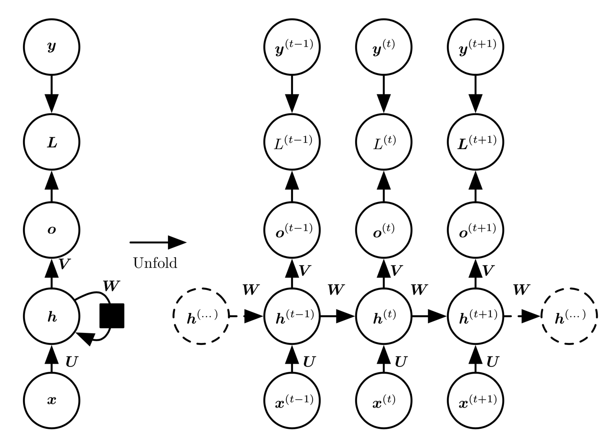

基于\sec?中的图展开和参数共享的思想，我们可以设计各种循环神经网络。
循环神经网络中一些重要的设计模式包括以下几种：
每个时间步都有输出，并且隐藏单元之间有循环连接的循环网络，如\fig?所示。
[success] Elam Network
每个时间步都产生一个输出，只有当前时刻的输出到下个时刻的隐藏单元之间有循环连接的循环网络，如\fig?所示。
[success] Jordan Network
Jordan Network的效果优于Elam Network，因为作为输出的y比h好控制。隐藏单元之间存在循环连接，但读取整个序列后产生单个输出的循环网络，如\fig?所示。 图10.3是非常具有代表性的例子，我们将会在本章大部分涉及这个例子。
[success] RNN训练方法：
t-1时刻得到的h(有的地方记作a)存在memory中，供t时刻的计算过程使用。
t-1时刻的h和t时刻的x共同决定t时刻的h。
对于t=0时刻，只有x，没有t-1时刻的h，此时要给h一个初值。

[info] 图10.3 计算循环网络
(将值的输入序列映射到输出值的对应序列)训练损失的计算图。 损失衡量每个与相应的训练目标的距离。 当使用softmax输出时，我们假设是未归一化的对数概率。 损失内部计算，并将其与目标比较。 RNN输入到隐藏的连接由权重矩阵参数化，隐藏到隐藏的循环连接由权重矩阵参数化以及隐藏到输出的连接由权重矩阵参数化。 \eqn?定义了该模型中的前向传播。 \emph{(左)}使用循环连接绘制的RNN和它的损失。 \emph{(右)}同一网络被视为展开的计算图，其中每个节点现在与一个特定的时间实例相关联。
\begin{figure}[!htb] \ifOpenSource \centerline{\includegraphics{figure.pdf}} \else \centerline{\includegraphics{Chapter10/figures/output_recurrence_rnn}} \fi \caption{此类RNN的唯一循环是从输出到隐藏层的反馈连接。 在每个时间步
任何图灵可计算的函数都可以通过这样一个有限维的循环网络计算，在这个意义上\fig?和\eqn?的循环神经网络是万能的。 RNN经过若干时间步后读取输出，这与由图灵机所用的时间步是渐近线性的，与输入长度也是渐近线性的{cite?}。 由图灵机计算的函数是离散的，所以这些结果都是函数的具体实现，而不是近似。 RNN作为图灵机使用时，需要一个二进制序列作为输入，其输出必须离散化以提供二进制输出。 利用单个有限大小的特定RNN计算在此设置下的所有函数是可能的（{Siegelmann+Sontag-1995}用了886个单元）。 图灵机的"输入"是要计算函数的详细说明(specification)，所以模拟此图灵机的相同网络足以应付所有问题。 用于证明的理论RNN可以通过激活和权重（由无限精度的有理数表示）来模拟无限堆栈。
[warning] 图灵机这一段没看懂
现在我们研究\fig?中RNN的前向传播公式。 这个图没有指定隐藏单元的激活函数。 我们假设使用双曲正切激活函数。 此外，图中没有明确指定何种形式的输出和损失函数。 我们假定输出是离散的，如用于预测词或字符的RNN。 表示离散变量的常规方式是把输出作为每个离散变量可能值的非标准化对数概率。
[success]
如果第i个词的概率是，不要求。
o一个向量，
然后，我们可以应用softmax函数后续处理后，获得标准化后概率的输出向量。
RNN从特定的初始状态开始前向传播。
从到的每个时间步，我们应用以下更新方程：
[success]
这里和符号和Ng课程里的符号不太一样。
Ng的公式里没有h，Ng的a就是这里的h。
其中的参数的偏置向量和连同权重矩阵、和，分别对应于输入到隐藏、隐藏到输出和隐藏到隐藏的连接。 这个循环网络将一个输入序列映射到相同长度的输出序列。
[success] 个输入产生个输出。
与序列配对的的总损失就是所有时间步的损失之和。
例如，为给定的后的负对数似然，则
[success] 这个公式是怎么推出来的？
其中需要读取模型输出向量中对应于的项。 关于各个参数计算这个损失函数的梯度是计算成本很高的操作。 梯度计算涉及执行一次前向传播（如在\fig?展开图中从左到右的传播），接着是由右到左的反向传播。 运行时间是，并且不能通过并行化来降低，因为前向传播图是固有循序的;每个时间步只能一前一后地计算。 前向传播中的各个状态必须保存，直到它们反向传播中被再次使用，因此内存代价也是。 应用于展开图且代价为的反向传播算法称为通过时间反向传播（back-propagation through time, BPTT），将在\sec?进一步讨论。 因此隐藏单元之间存在循环的网络非常强大但训练代价也很大。 我们是否有其他选择呢？